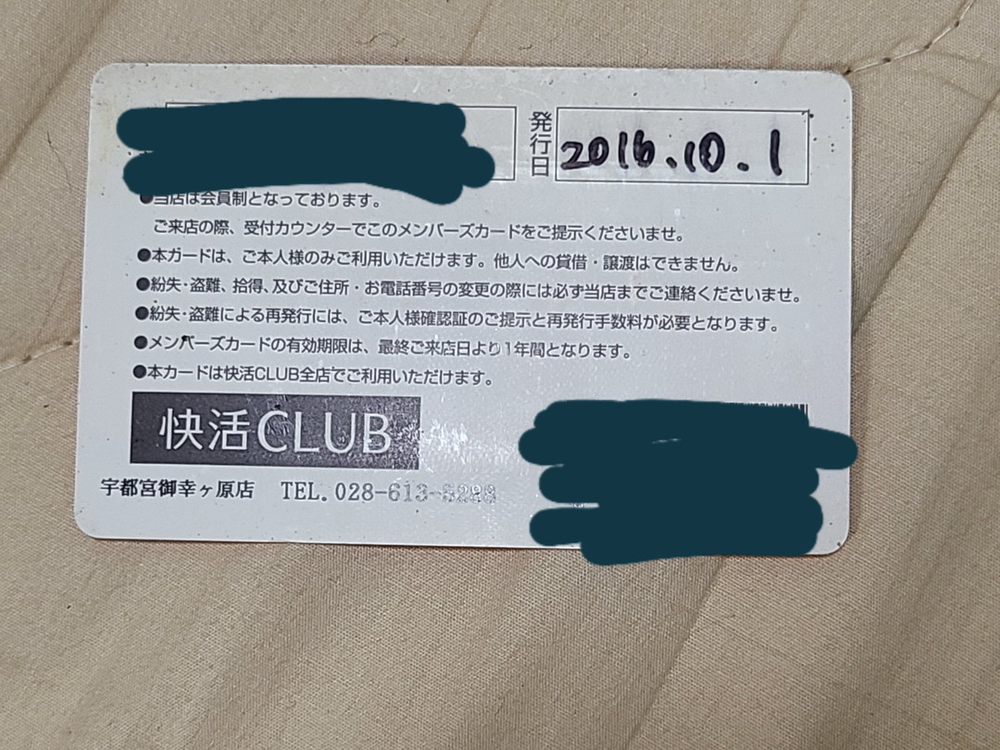

投稿日2022-11-24
序章
大学生になって数ヶ月が過ぎた。1年生の前期から夏休みにかけておおよそ大学生の一番新鮮な時期が終わろうとしていた。大学生活の理想と現実、崩壊する人間関係、いつまでも研修扱いの労基法違反のアルバイト。私はとても鬱屈していた。
その夏始めて一人で旅行をした。『JR北海道＆東日本パス』でなんとなく函館まで行ってみた。初めて宿を予約して、朝一で青函フェリーに乗り北の大地へ。大沼でクロスバイクを借りて散策をして、函館山からの夜景を麓行きのバスから眺め、塩ラーメンを食べた。あとラッキーピエロにいった。
帰りは福島の駅で震災の爪痕を見ることになる。代行バスに乗りながら自然の脅威を思い知る。無人駅では男性がセンチな曲を吹いていた。
水戸のスーパーホテルで初めて朝食バイキングを食べてた。なんとなくカレーを食べてた記憶がある。大洗にも行った。お盆だったのであんこう鍋の店は開いてなかった。
家へ向かう電車が倒木の影響で三時間停車。おっさんが躊躇なくシートで寝っ転がっているのを見て常磐線のやばさを実感した。深夜2時、霧雨の我孫子駅で降ろされた私は仕方なくカラオケで仮眠をとることにした。せっかくだから井上陽水の『夢の中へ』だけ歌って朝一で家に帰った。
それで、後2日だけ残っていたので夜に家を飛び出し、上総一ノ宮かなにかのガストで２時まで待ってから九十九里浜まで歩いた。朝日を見て、館山から沖ノ島までまた歩く。その後なんとなく久留里線を巡った。同じ県内でこんなローカルな場所があり、制服を着て学校に行ってる人がいるというのはカルチャーショックだった。逆に言うと当時はそれだけ旅行になんて縁遠い存在だった。こうして私の初一人旅は幕を閉じる。
意外になんとかなるもんなんだな。それくらいしか感想はなかった。淡々として”映える”ことのない、初めての一人旅としては語るにつまらない思い出だが、確実に今の私を構成する原体験になっている。
馴れ初め
.jpg)
そして一月後、初めてスポーツバイクを購入した。Giant Escape R3の確か2013年モデル。リアエンド幅が130mmで新品なら5万と、当時はベース車としてはもってこいの自転車だった。(今はだいぶ値上がりしたけど)
サイズはMサイズ、160前半のわたしにとって米国Mサイズは少々デカかったがヤフオクで安く出回ってたのがそれだけだったので、金のない私に選択の余地はなかった。確か届いた時は両輪とペダルが外してある状態だったので最初から修羅の道だった。もしかしたらハンドルもステムから取って梱包されていたかもしれない。ここらへんは記憶が曖昧だ。
ファーストステップ
.jpg)
写真に拠ると初めてのパーツ交換はペダルらしい。友人に「三ヶ島にしろ」というダイマを受けて買ってみた。クルクルクルクル回る。これ以降ずっと三ヶ島使うようになった。
.jpg)
ちなみにCATEYEのど定番サイコンとライトを購入してたらしい。

このあと宇都宮までぽたサイ(片道80km)して初快活クラブ泊を果たした。単に、江戸川の果てを見に行くはずが気がついたら宇都宮にいた。もう夕方だったので銭湯に入ってから適当に飯を食べて、深夜割料金で泊まった。
朝4時に外へ出たらオリオン座が輝いていた。この時期にオリオン座を見るなんて変な気分だなと思いながら帰宅路へ。帰りは向かい風が強くて大変だった。
峠へ
.jpg)
.jpg)
その後バーエンドを生やして大ダルミ峠へ行ってみた。宇都宮後、輪行というものを試してみたかったので高尾山口駅へ。
白状するとこの時期はドッペルギャンガーの前輪外し輪行袋を使用していた。罪である……。
東京ドイツ村
.jpg)
別に大した目的はないが東京ドイツ村に行った。カントリークラブだらけで迷って無駄に坂を往復した。
園内は家族連れが多かった気がする。『Willkommen!』と『Welcome!』の標識がやけに印象に残ってる。ああ、ドイツ語の授業で見た単語だと思った。ちなみにこの後ドイツ語の単位は落とすことになる。
フランクフルト、ソーセージ。あとなんか水鳥と羊。うーん場違いなところに来たな、と思いながら一巡だけして帰った。
ボトルケージ
.jpg)
２月になり、ボトルケージを買った。クロスバイクは積載箇所がないので、やはりあるとないとでは大違いである。
これにダイソーのワンタッチキャップを合わせると信号待ちで楽だしペットボトルをいちいち移し替える必要がない。
もちろんこのボトルケージもダイソーのものである。
その時期のあれこれ
.jpg)
イオンバイクが出していたmomentum i NeedシリーズのZ-5AIR。たしかこれはEscapeとOEM元が同じとかなんとかでコスパがいいとか言われてた記憶がある。当時はだいぶ見たけどもう絶滅したか。
.jpg)
元々ニコニコの車載動画をきっかけにクロスバイクを買ったので自分もどうにか撮ってみようと中華アッカムを買ってみた。
この時は結局殆ど撮らず、カメラが文鎮化した。
わーさんの動画を受験期に見て、自分もそのうちロングライドをしてやろうと思っていた。この人の動画は力が入っている分失踪しがちでありながら、数年越しに続編が生えてくる。しゃもじマウントの人でもある。
いざ鎌倉
.jpg)
.jpg)
さて、すっかり季節は初夏、GWに友人2人とTARITARIの聖地巡礼だ！と鎌倉目指し深夜に東京を横断し、昼についた。
深夜の都内の人気の無さにびっくりしながら走り、昼に鎌倉についた時には暑さと眠気で死にかけていた。ほぼ観光しないで帰った。
帰りに初めてリカンベントとタンデム自転車を見かけた。
.jpg)
ちなみに友人のうち一人はママチャリでついてきた。今考えればとんでもないことしてるな。
ブレーキをDeoreに
.jpg)
これもまたど定番のパーツ交換。DeoreのBR-T610にVブレーキを替えた。正直テクトロですらジャックナイフしかけたのに必要だったのか。
是非はともかくとして当時は2000円で買えるコスパ最強ブレーキだった。今は3000円。ひえ～。もう時代はディスクだしね……。
印旛沼へ
.jpg)
.jpg)
梅雨明け頃印旛沼へ、ひまわりと風車を目的に行ってみた。春にNikon D5200を買ったので自転車✕カメラという目的が強くなっていたはず。
ボトルケージ交換
.jpg)
外置き駐輪のせいなのか単に劣化か、ダイソーのボトルケージがひん曲がっていたので本家Topeak製を近所の中古サイクルショップで買った。正直100円にしては出来はいいと思う。
色々追加
.jpg)
ライトが中華の"すごいルーメン大きいライト"になってたりドッペルギャンガーのキャリアをつけたりクッションシートを追加したりしている。
.jpg)
.jpg)
そして愛すべきコンチネンタルの28cタイヤ。コンチしか勝たん。Wiggleで輸入したらハリボーがついてきた。この頃ドイツ語の再履修を受けてたので複雑な気持ちで食べた。
.jpg)
しれっとシマノ純正のチェーンオイルを丁寧に注油している様子。今じゃAZのチェーンソーオイルしか使ってない。
満を持してロングライド
ここまでカスタムしたのには理由がある。
.jpg)
例のごとくゴミ輪行である。本当に申し訳ない。
.jpg)
高尾山口駅まで輪行した。季節は一巡し、大学二年の夏休みの終わり、学内で知り合った友人と高尾山口駅→甲府→松本→（輪行で）軽井沢→高崎→荒川のロングライドを計画していたのだ。
.jpg)
ちなみにこの旅程は初日友人のホイールが外れないという珍事により、スタートから３時間の遅延を喰らう。
深夜に通りたくないねと言った旧笹子峠を20時過ぎに通る羽目になった。ちなみにフォークにつけていたキャットアイのライトをその時落としたので拾ってたら誰か届けてくれ（無理）。
.jpg)
初めて火球を見たり、生還したときの夜景がやけに美しく思えたり、新鮮な経験をしてくたくたになりながら幸楽苑で晩飯を食べた。
ホテルのチェックインが0時過ぎになり、入湯税を取られるのに大浴場に入れないというギャグをかましながらなんとか甲府にたどり着く。
.jpg)
2日目、今度は自分のトルク管理のいい加減さでキャリアのボルトが外れてグラグラに。慌ててホムセンへ駆け込む。これ以降の旅でなぜかホムセンへ行く風潮が生まれる。
.jpg)
.jpg)
.jpg)
道の駅で途中昼食を。当時は道の駅がやたら新鮮な施設に思えた。
.jpg)
流石に前日の疲れが取れてなかったので富士見駅で輪行をして松本まで行くことにした。
高ボッチで星を撮る計画があったが疲労と自分が三脚を家においてくる凡ミスで消えた。数年後車で高ボッチ行ったけど、あの時行ってたらやばかったなと思った。
.jpg)
そして松本へ。当時はスタンプを集めようと思ってたがスタンプ帳を毎回置いてくるので最近はもう押してすらいない。
.jpg)
3日目なんとか帳尻を合わせて軽井沢へ。当日は曇っていて寒かった。ファミマで食べたおでんが体に滲みた。
その後碓氷峠を下っている最中にEscapeくんのフロントホイールのベアリングが崩壊して左右に揺れだした。当時は無頓着に下っていたがとんでもないことをしていた。
.jpg)
その後、絶対に自転車を通さないという強い意志を感じさせるサイクリングロードを通って高崎へ。
自転車があんな状態なのに翌日荒サイ行く気満々だった。ただ起きてみたら土砂降りだったので諦めて電車で帰った。
こうして初のロングライドは幕を閉じる。正直初日がピークだった気もするけど結果楽しかったからいいとしよう。
ホイール交換
.jpg)
さて、フロントホイールがだめになってしまったのでこれまたど定番のWH-R501に替えた。
こいつは鉄下駄と言われる前後セット1万円のコスパ最強ホイールで……あれ今2万するの？ひええ～。
盗難被害にあう
.jpg)
.jpg)
駅までの通学に使っていたのでバイト先に停めておいたら帰りに盗まれていた。
何が？って中華ライトとボトルケージが……。いやなんでそんなもん盗むん？？と思ったけども。
なんかやたら駐輪場所前でライト照らしてたやついたけどひょっとしてすれ違いだったのかもしれない。というかせめてボルトだけは置いていってほしかった。地味に買うのめんどくさいんだよ、それ。
ちなみに後日同じボトルケージを近所の中古ショップで買ったけど……まさか、ね。
コスパ最強10速化
.jpg)
.jpg)
中古パーツを寄せ集めれば2万ちょいで10速できる！というブログに出会い早速実行。シフターとスプロケットは新品を買ったがそれ以外は中古パーツの寄せ集め。tiagra4600のクランクに105の5701のディレーラー。
ついでにブルホーン化もした。実際かなり走行性能が上がってびっくりした。
.jpg)
うっきうきで湘南あたりをテストライドしてた。ちょうど”いざ鎌倉”から1年だったのでリベンジマッチみたいなものか。今回は楽しく漕げた。
.jpg)
年式が同じEscapeR3が停めてあったので比較に写真を撮ったらしい。こいつ絶対悦に浸ってただろうな。
ブレーキレバーを変える
.jpg)
1ヶ月くらい使っているとブルホーンの角を持って走りたくなったのでブレーキレバーをテクトロのRL520に変更。
これでコンポーネントは全とっかえしたことになる。
.jpg)
あとカメラを気軽に出せるようにフロントバッグをつけてみる。
.jpg)
リアライトをソーラー充電式にしたがあまりいいアイデアではなかった。
サドルとシートポスト交換
.jpg)
完全に忘れていたがサドルが加水分解でボロボロになったのでシートポストも同時に変えていたらしい。
軽量化とかではなくドレスアップが目的だと思う。あとはステムを黒にすればほぼいい感じだなとか思ってた記憶がある。
あとこのドッペルのリアキャリアいよいよやばそうだったので後日買い替えた。
房総はいいぞ
.jpg)
.jpg)
やっと両輪外しに目覚めた。紅葉を求めに蘇我から養老渓谷を経由して鴨川、野島崎灯台、館山とぐるり2泊3日を計画した。
.jpg)
天気が悪すぎて紅葉は諦めた。代わりにチバニアンを見ることに。正直知識がないからあんまり覚えてない。チバニアン時代。
.jpg)
この頃色々あってキャンプ場に泊まるという発想を得たため途中のバンガローで1泊した。最近はテント泊メインだが3人くらいならバンガローは快適だと思う。寝袋かストーブさえ有れば。
.jpg)
翌日は南房総の宿で一泊して最終日に野島崎灯台に行った。房総はいいぞ。ちなみにこの後何度も南房総に行ったがまったく飽きない。
自転車通行可の標識の真下がが砂に埋れてる「渡れるもんなら渡ってみろ」と言わんばかりの道があるのでぜひ通ってほしい。
STI化
.jpg)
それから一年は目立ったことはしていなかった。強いて言えば自転車通学不可にもかかわらず部室に自転車ぶちこんで置くことで通学したことがあるくらいだろうか。
そんなこんなで3年目の秋、STIレバーとミニVブレーキを手に入れたので満を持してロードライクなカスタムをした。EscapeR3の王道カスタムを結局やることに。
山形県南陽市
.jpg)
暇を持て余していたのでバイクの免許を取るために山形へ。あと天の川を取るときの足がほしかったのもある。
車の免許合宿のとき自転車貸出がなかったのを教訓に輪行して行った。
.jpg)
.jpg)
.jpg)
結構楽しかった。1週間くらいベースキャンプ決めて散策するのは割りと性に合ってるのかもしれない。かなり贅沢だけど。
有終の美
.jpg)
バイクを手に入れてからというもののメインがそっちに移ってしまった。しかもゴリゴリ弄ってしまったので街乗りにはちょっと強すぎる。ということで、乗らなくなったため手放すことになった。やはり、道具は使われてこそ意味がある。最後の記念として東京タワーまでライドした。その後メルカリで買い手が見つかったので新たな持ち主へと。どうなったんだろなぁ。実はなぜかブレーキ調整がおかしくてあさひの店員も調整失敗した（とはいえじぶんがやるよりバッチリ決まっていたが）。週１くらいでブレーキの引きを直さないと行けなかったので謎だった。解決不能として明記して売ったが無事チューニングされて今も乗られていることを願っている。今だったらMr.Controlとか使ってみるとか発送は出てくるけど、当時は全くわからなかった。
おわりに
さっきちょこっと写っていたが房総旅行の際にSpeed P8に乗ってた友人から受け継いで今乗っている。結局街乗り特化にとか思いながら変な弄りをしているのでもうこれはどうしたらいいんだ。
しかし、こういった自転車弄りの基礎を教えてくれたのはEscapeR3くんである。「クロスバイクに乗ると結局ロードに乗りたくなる」という台詞はよく聞くが自分はあまりそうならなかった。まあSTI化とかはしたけどあれはどちらかというとカスタム欲が先に出ただけである。自分の入り口は旅行だった。競技勢になることも、タイムアタックも興味が無いので折りたたみへ行くのは必然だったのかもしれない。
振り返ってみれば大学時代ほとんど一緒に過ごしていた。だから必然と自転車に関係のない思い出もぽつぽつと浮き出てくる。あまり乗ってなかった時期はあれやってたな、とか。そういった思い出を含めて自分にとってEscapeR3はかけがえのない存在だったと備忘録を兼ねてここに記しておく。